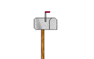

Vanligtvis ses vi varje tisdag och torsdag klockan 17-19.
Tisdag 14/4, 17-19
Torsdag 16/4, 17-19
>
Tisdag 21/4, 17-19
Torsdag 23/4, 17-19
>
Tisdag 28/4, 17-19
Torsdag 30/4, STÄNGT
>
Tisdag 5/5, 17-19
Torsdag 7/5, 17-19
>
Tisdag 12/5, 17-19
Torsdag 14/5, 17-19
>
Tisdag 19/5, 17-19
Torsdag 21/5, 17-19
>
Tisdag 26/5, 17-19
Torsdag 28/5, 17-19
Plats?
Vi håller till i den studentdrivna datorsalen Gruvan i Täppan, TP4034. Om vi blir många delar vi upp oss och går till fler salar.
Kontakt
Det går alltid att få tag på oss på Facebook och Twitter. Kolla in våra häftiga GitHub-repon också!
Allmänna frågor hänvisas till kontakt at lithehack.se.